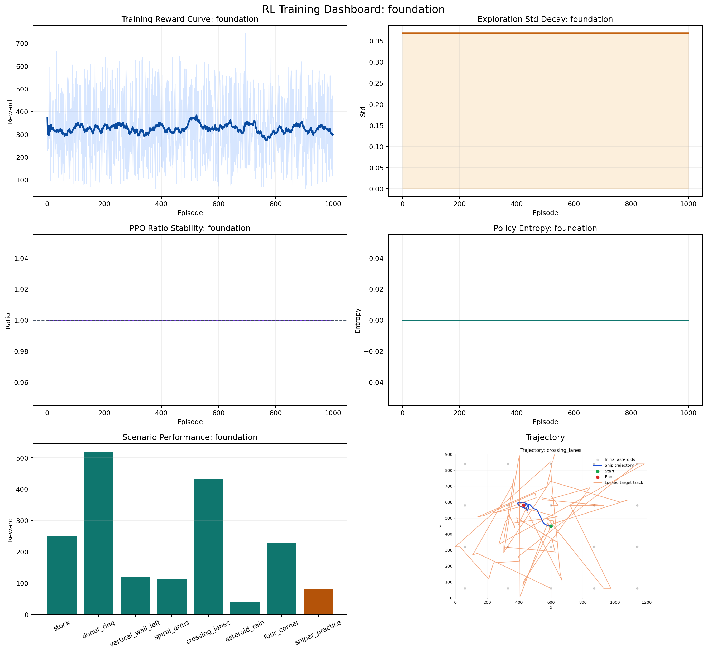
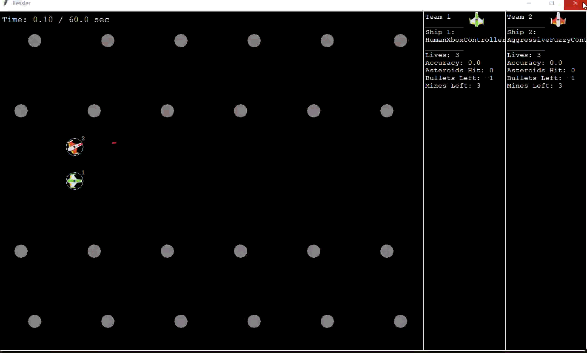

RL controller for the Kessler Game
Built for the Explainable Fuzzy Competition with fuzzy control, PPO, and staged training across multiple scenario groups.
Read the case studyHi, I’m Khanh.
I’m a Computer Science student at DigiPen working across reinforcement learning, machine learning, and software projects.


Built for the Explainable Fuzzy Competition with fuzzy control, PPO, and staged training across multiple scenario groups.
Read the case studyPolicy training, control decisions, staged scenarios, and evaluation.
Feature pipelines, model validation, computer vision, and practical ML apps.
Interactive software, C/C++ projects, and systems built for people to use.
Projects, technical detail, and contact information are all here.